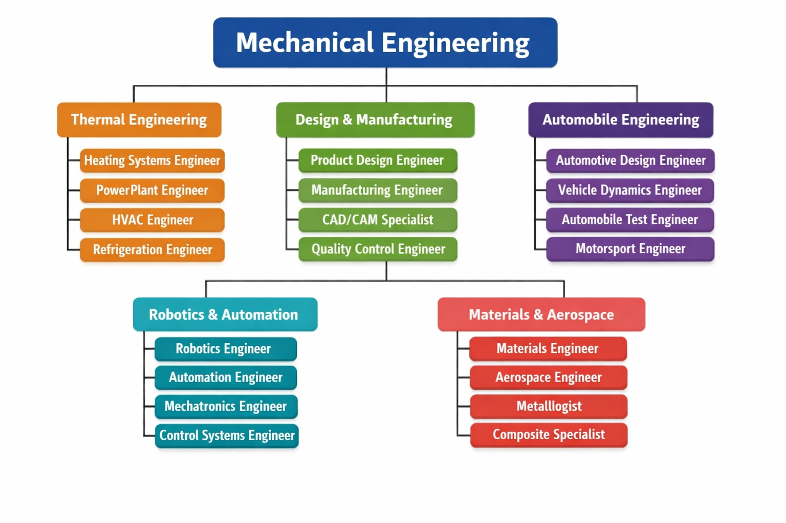

🔧 Mechanical Engineering – Sub-Branches & Info
🔥 Thermal Engineering: Thermal Engineering focuses on heat, energy, and thermodynamics. It involves working with engines, turbines, and boilers and is widely used in power plants and cooling systems. The key subjects in this branch include Thermodynamics and Heat Transfer. Careers in this field include power plant engineer, HVAC engineer, and refrigeration engineer.
🏭 Design & Manufacturing: Design & Manufacturing deals with designing machines and producing them. It uses software like CAD/CAM and involves production processes and quality control, making it very important for industries and factories. Career options include product design engineer, manufacturing engineer, and quality engineer.
🚗 Automobile Engineering: Automobile Engineering is related to the design, development, and maintenance of vehicles such as cars, bikes, and trucks. It mainly focuses on engine performance, safety, and overall vehicle efficiency. Career options include automotive engineer, vehicle testing engineer, and motorsport engineer.
🤖 Robotics & Automation: Robotics & Automation focuses on robots and automatic systems. It combines mechanical engineering with electronics and programming and is widely used in industries, artificial intelligence, and smart machines. Career options include robotics engineer, automation engineer, and control systems engineer.
✈️ Materials & Aerospace: Materials & Aerospace deals with the study of materials and aircraft or space technology. It focuses on material strength, properties, and their applications, along with aircraft and spacecraft design. Career options include aerospace engineer, materials engineer, and metallurgist.
▶ Click here to watch Mechanical Engineering video on YouTube ← Back to Home